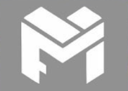

Da marca atual para um sistema de identidade à altura das obras que a empresa entrega.
A marca atual tem um bom conceito: o F e o M fundidos num volume construído. O problema não é a ideia, é como ela foi desenhada. A proposta preserva o monograma e a sobriedade monocromática, mas reconstrói tudo com lógica de engenharia.

Símbolo atual extraído dos posts da empresa, no tamanho e qualidade em que circula hoje.
Mantém da marca atual: monograma FM, monocromia, ideia de construção.
Todos os elementos têm a mesma espessura, como peças padronizadas de concreto. Isso dá rigor e coerência ao desenho.
As vigas do F não tocam o pilar: deixam uma junta, como numa estrutura real. É o detalhe que torna a marca precisa e reconhecível.
No centro do M, a cunha em cor de óxido mostra a carga descendo até os pilares. Também lembra o "visto" de obra aprovada.
O símbolo inteiro é construído sobre um módulo. Reproduzir, ampliar, bordar ou recortar em adesivo fica simples e sempre fiel.
Avatar do Instagram, bordado na farda, adesivo no capacete, rodapé de orçamento. Nesses tamanhos se decide se a marca é lembrada ou ignorada.
Nada de azul corporativo genérico. As cores vêm do próprio canteiro: o grafite do aço, o cinza do concreto e o óxido do vergalhão.
Base. Textos e fundos principais.
Fundo claro. Respiro e sobriedade.
Destaque. Uso pontual: o V e as chamadas.
Apoio. Superfícies e uniformes.
Sem serifa de largura variável. Firme e técnica nos títulos e expandida na assinatura.
Para cotas, legendas, números de orçamento e dados de obra. É a voz do projeto.
A Farias de Melo já faz obra para rede nacional de farmácias em outro estado. A marca ainda tem cara de começo. A evolução fecha essa distância sem apagar a história: quem conhece o FM antigo reconhece o novo.
Monograma FM, monocromia e ideia de construção ficam. Não é uma ruptura, é uma evolução.
Desenho preciso transmite obra precisa. Isso pesa em orçamento de cliente comercial e corporativo.
Formas chapadas e uma cor de destaque: barato de bordar, plotar, recortar e imprimir.
Site, Instagram, placas, fardas e propostas passam a falar a mesma língua visual.